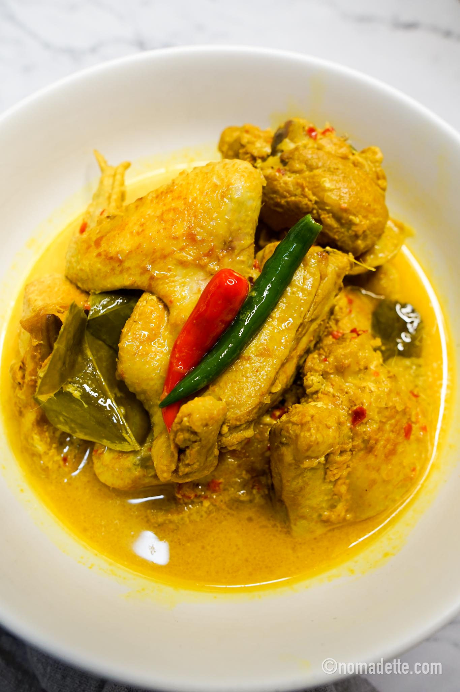

Welcome to my website
Hello World
😁
Let's start cooking
Bahan Utama
- 1/2 1 ekor ayam
- 1 biji bawang besar
- 4 ulas bawang putih
- 2 biji buah keras
- 2 ruas kunyit hidup
- 4 hiris lengkuas
- 3 batang serai
- 10 biji cili padi
- 2 biji cili besar merah
- 1 sdk jintan manis (serbuk)
- 1 sdk jintan putih (serbuk)
- 1 sdb ketumbar (serbuk)
- 4 keping asam gelugur
- 1 kg santan
- 4 helai daun limau purut
- 1 helai daun kunyit
- 1 senduk minyak masak
- secukupnya Garam
Langkah-langkah
- Kisar cili padi, cili besar, bawang putih, bawang besar, lengkuas.. serai diketuk… panaskan minyak dan tumis sekitar 5 minit
- Masukkan ayam dan tambah 1 cawan air.. masak sehingga ayam kecut
- Masukkan santan, asam gelugur dan daun limau purut masak sehingga mendidih biar sedikit pecah minyak.. setelah itu biar sekitar 10 minit dan masukkan hirisan daun kunyit.. tambah garam secukupnya
- Siap dahhh